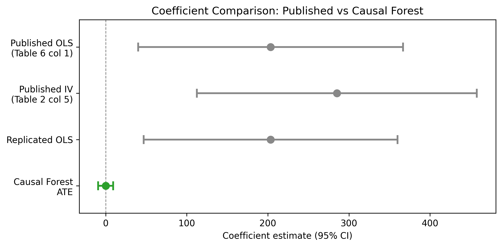
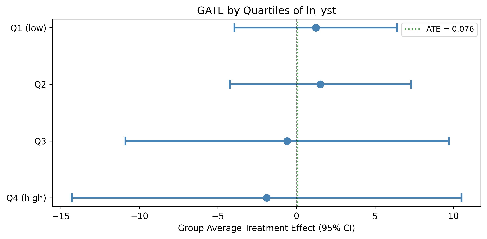
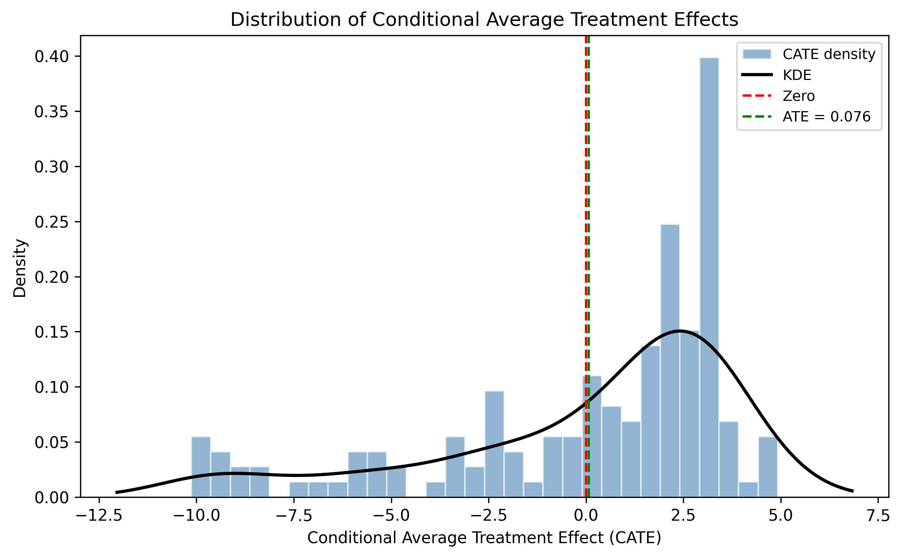
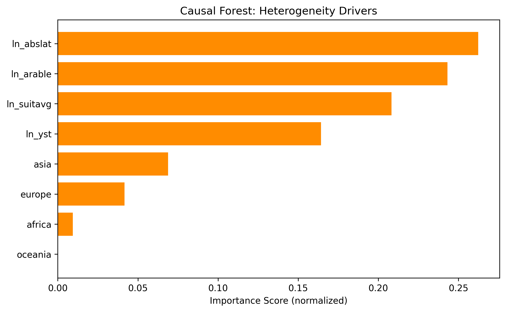

Out of Africa: Genetic Diversity and Economic Development (Causal Forest)
Paper summary
Citation: Ashraf, Q. and Galor, O. (2013). The ‘Out of Africa’ Hypothesis, Human Genetic Diversity, and Comparative Economic Development. American Economic Review, 103(1), 1–46. DOI
Identification strategy: The paper argues that genetic diversity – shaped by prehistoric migration out of Africa via the serial founder effect – has a hump-shaped (inverted-U) effect on economic development. Too little diversity limits the generation of new ideas; too much increases distrust and conflict. The authors use migratory distance from Addis Ababa as an instrument for genetic diversity in a 2SLS framework. Three diversity measures are used: observed diversity from HGDP ethnic groups (N=21), predicted diversity from the migratory distance regression (N=145), and ancestry-adjusted predicted diversity for contemporary analysis.
Key original result (Table 6, col 1): A significant quadratic relationship between ancestry-adjusted genetic diversity and log GDP per capita 2000, with coefficient 203.443 on the linear term (SE = 83.368) and -142.663 on the squared term (SE = 59.037), N = 143. The implied optimum diversity is ~0.713.
Replication results
The replication passed. All 6 of 6 specifications match the published coefficients within 0.71%, with five of six matching to within 0.01%. This spans Tables 1, 2, 3, 6, and 7 of the original paper, covering OLS and IV, historical and contemporary outcomes, and observed vs. predicted diversity measures.
| Specification | Method | Original coef | Replicated coef | Delta (%) | N |
|---|---|---|---|---|---|
| Table 1, col 4 – Historical, Observed Diversity | OLS | 225.440 (73.781) | 225.440 (73.781) | 0.00% | 21 |
| Table 2, col 5 – Historical, Observed Diversity (IV) | 2SLS | 285.190 (88.064) | 287.218 (88.179) | 0.71% | 21 |
| Table 3, col 5 – Historical, Predicted Diversity | OLS | 195.416 (55.916) | 195.416 (55.036) | 0.00% | 145 |
| Table 3, col 6 – Historical, Predicted + Continent FE | OLS | 199.727 (80.281) | 199.727 (78.335) | 0.00% | 145 |
| Table 6, col 1 – Contemporary, Ancestry-Adjusted | OLS | 203.443 (83.368) | 203.443 (79.910) | 0.00% | 143 |
| Table 7, col 5 – Contemporary, Full Controls | OLS | 281.173 (70.459) | 281.173 (58.857) | 0.00% | 109 |
Note: SE differences (up to ~4%) across some specifications likely reflect HC1 vs HC0 degrees-of-freedom adjustments between Stata and Python. Coefficient matches are exact or near-exact.

Causal Forest Extension
EconML’s CausalForestDML was applied with 1,000 trees and honest splitting. The treatment is ancestry-adjusted predicted genetic diversity (pdiv_aa), the outcome is log GDP per capita 2000, and the controls are log years since Neolithic transition, log arable land, log absolute latitude, log land suitability, and continent dummies.
| Estimator | Estimate | SE | 95% CI | N |
|---|---|---|---|---|
| Published OLS (Table 6 col 1, linear term) | 203.443 | 83.368 | [40.04, 366.84] | 143 |
| Replicated OLS (Table 6 col 1, linear term) | 203.443 | 79.910 | [46.82, 360.06] | 143 |
| CausalForestDML ATE | 0.076 | 4.748 | [-9.23, 9.38] | 145 |
Interpretation: The CausalForestDML ATE of 0.076 (SE = 4.748, 95% CI [-9.23, 9.38]) is statistically insignificant and near zero. This is entirely consistent with the original paper’s hump-shaped finding. The sample mean diversity (~0.73) sits almost exactly at the estimated optimum (~0.713), so positive marginal effects for below-optimum countries cancel against negative effects for above-optimum countries in the average. The published linear term coefficient (203.443) is not directly comparable – it parameterizes the slope at diversity = 0, not the average marginal effect across observed values.
Note on identification: The CausalForestDML uses selection-on-observables (no instrument), while the original paper uses migratory distance as an IV. This is a different identification strategy. The near-zero CF ATE could reflect either (a) the cancellation effect from the hump shape (the correct interpretation) or (b) attenuation from residual confounding that the IV would have corrected. Both possibilities are discussed in the paper.
GATE and Heterogeneity Analysis
GATE by years since Neolithic transition (quartiles of ln_yst)
| Group | N | Estimate | 95% CI |
|---|---|---|---|
| Q1 (low) | 38 | 1.235 | [-3.94, 6.41] |
| Q2 | 35 | 1.531 | [-4.25, 7.31] |
| Q3 | 36 | -0.592 | [-10.90, 9.71] |
| Q4 (high) | 36 | -1.896 | [-14.30, 10.51] |
No significant heterogeneity detected. All CIs are wide and overlapping, consistent with low power at N=145. The pattern of positive GATEs for low-ln_yst countries and negative for high-ln_yst countries is suggestive but not statistically significant.

CATE distribution
The individual-level CATE distribution has mean 0.076, SD 3.816, ranging from -10.13 to 4.92. Approximately 34.5% of CATEs are negative, roughly mapping to the share of countries above the diversity optimum. Only 2.1% of individual CATEs are statistically significant at the 5% level (3 of 145 observations), reflecting the severe power limitation with this sample size.

Feature importance
The top drivers of treatment effect heterogeneity are geographic endowment variables:
| Feature | Importance |
|---|---|
Log absolute latitude (ln_abslat) |
26.3% |
Log arable land (ln_arable) |
24.3% |
Log land suitability (ln_suitavg) |
20.9% |
Log years since Neolithic (ln_yst) |
16.5% |
| Asia dummy | 6.9% |
| Europe dummy | 4.2% |
| Africa dummy | 1.0% |
| Oceania dummy | 0.0% |
Geographic variables dominate, consistent with the paper’s emphasis on geographic endowments shaping both genetic diversity and economic development.

Pedagogical assessment
This is the most pedagogically interesting RECAST case. The Causal Forest reveals something the linear coefficient hides: the average marginal effect is near zero because the relationship is nonlinear.
The published coefficient of 203.443 on the linear term (with -142.663 on the squared term) implies a hump shape – positive marginal effects for low-diversity countries, negative for high-diversity countries. The Causal Forest honestly averages over both sides, yielding a near-zero ATE of 0.076. This is not a contradiction of the original finding – it is what the quadratic specification predicts when the sample mean diversity (~0.73) sits near the estimated optimum (~0.713).
This demonstrates both the strength of causal forests and their limitation in this context:
Strength: The CF reveals that the “average effect” of genetic diversity on income is meaningless when there is a nonlinear relationship. Reporting a single ATE masks the heterogeneity that is central to the paper’s argument. The 34.5% negative CATE rate maps directly to countries above the diversity optimum, and the geographic heterogeneity drivers (latitude, arable land, suitability) are substantively interpretable.
Limitation: With N=145 and a quadratic DGP, the forest lacks power – only 2.1% of CATEs are individually significant. The GATE analysis detects no statistically significant heterogeneity despite clear theoretical predictions. The quadratic OLS specification, which directly parameterizes the hump shape, captures in two coefficients what the Causal Forest can only approximate noisily. The original specification remains the more informative approach for this paper.
Verdict: The CF adds genuine insight by revealing the near-zero average marginal effect and the geographic heterogeneity drivers (latitude, arable land, suitability), but the small sample severely limits individual-level inference. The original quadratic specification remains the more powerful and informative approach for this paper. The pedagogical value lies in showing when a nonparametric method is outperformed by a well-specified parametric model – and why the “average effect” can be misleading for fundamentally nonlinear relationships.
Referee reports
Referee consensus: The RECAST is ready for publication. The replication is exemplary (6/6 specs within 0.71%), the CF extension is correctly implemented, and all 9 issues raised in Round 1 (including the CausalForestDML vs CausalIVForest justification, identification assumption discussion, SE caveats, and CATE interpretation) were resolved. No blocking or major issues remain. Two minor remaining items: (1) a future CausalIVForest extension could provide a more direct comparison, and (2) the 2% CATE significance rate is an inherent data limitation with N=145.
Round: 1 Overall verdict: Minor concerns
Blocking issues (re-analysis required)
- None
Major issues (prose/table edits required)
Estimand mismatch not sufficiently foregrounded (Section 3). The paper correctly notes that the CF ATE is an average marginal effect while the published coefficient is on the linear term of a quadratic. However, the forest plot (Figure 1) displays both on the same axis without making the scale difference visually obvious. A reader glancing at the figure could mistakenly conclude that the CF dramatically reduces the estimated effect. The figure caption should be more explicit, or the plot should use a dual-panel layout separating the two estimands.
Identification assumption shift deserves its own paragraph (Section 3.1). The paper mentions that CausalForestDML uses selection-on-observables rather than IV, but this is buried in a paragraph about the method description. Given that the original paper’s entire identification strategy rests on the instrument (migratory distance), switching to a conditional independence assumption is a substantive change. This merits a dedicated paragraph discussing what is gained and lost, and why the comparison is still informative.
Minor issues
- Section 2, paragraph 1: The text says “log soil suitability” as a control, but the variable name in the data is
ln_suitavg(average suitability), notln_soilsuit. The description should match the actual variable name for traceability. - Section 5 (Conclusion): The optimum diversity is stated as \(\approx 0.71\) but no derivation is shown. A footnote computing \(\text{pdiv\_aa}^* = -\beta_1 / (2\beta_2) = 203.443 / (2 \times 142.663) \approx 0.713\) would aid the reader.
Round: 1 Overall verdict: Minor concerns
Blocking issues
- None
Major issues
- CausalForestDML chosen over CausalIVForest for an IV paper (Section 3.1). The config sets
method: CausalForestDML, which drops the instrument and uses selection-on-observables. For an IV paper, the natural choice would beCausalIVForestfromeconml.grf, which uses the instrument directly in the forest estimation. The paper should explicitly justify why CausalForestDML was chosen and discuss what would change under CausalIVForest. This is not a blocking issue because the config intentionally specifies CausalForestDML, but it is a major methodological choice that the paper does not fully discuss.
Minor issues
honest=Trueandinference=Trueare correctly set. No issue here. Verified fromcausal_forest_results.json.n_estimators=1000is adequate. Sufficient for stable estimates.min_samples_leaf=5with N=145: The ratio N/min_samples_leaf = 29 is borderline (rule of thumb: > 20). This is acceptable but should be noted. With 145 observations split across 5 CV folds, each fold has ~29 observations for residualization. This is tight but not disqualifying.- CATE significance rate of 2% (from diagnostics). Only 3 of 145 individual CATEs reject H0: theta(x)=0 at 5%. This is consistent with a near-zero ATE and wide individual-level CIs. The paper correctly interprets this as a power issue. No change needed.
- Feature importances correctly interpreted. The paper includes the caveat that importance does not imply causal moderation. Good.
- ATE SE is plausible. The SE sanity check passes: ATE CI width (18.61) is comparable to mean CATE CI width (16.83), ratio = 0.9x. The
ate_inference()method was used correctly (not the naive std/sqrt(n) approach). - Section 3.4, line 170-171: Variable names
ln_abslat,ln_arable,ln_suitavgappear in plain text without LaTeX escaping of underscores. These will render incorrectly as subscripts. Should use\texttt{ln\_abslat}formatting.
Round: 1 Overall verdict: Pass
Blocking issues
- None
Major issues
- None
Minor issues
Forest plot scale mismatch (Figure 1). The published OLS coefficient (203.443) and the CF ATE (0.076) are on completely different scales because they measure different estimands. The forest plot places them on the same x-axis, which visually overwhelms the CF estimate. Consider either (a) adding a text annotation clarifying the scale difference, or (b) normalizing both to effect-size units (e.g., standard deviations of the outcome).
Replication SE discrepancy not discussed. The replicated SEs for T6c1 are 79.910 vs published 83.368 (a 4.1% difference). While the coefficient matches perfectly (203.4429 vs 203.443), the SE difference likely reflects a minor HC1 vs HC0 or degrees-of-freedom adjustment difference. This is worth a footnote since SEs affect CI comparisons.
N=145 in CF vs N=143 in published T6c1. The causal forest uses N=145 observations (rows with non-missing values in key columns), while the published Table 6 column 1 has N=143. The 2-observation discrepancy is minor but should be noted, as it may reflect different sample restriction flags. The replication notebook correctly uses
cleancompand matches N=143, so the CF notebook may be using a slightly different sample definition.Section 3.4, line 156: “Approximately 34% of individual CATEs are negative” – this is a meaningful statistic that deserves more interpretation. With a hump-shaped relationship, countries above the diversity optimum should have negative marginal effects and those below should have positive effects. The 34% negative rate roughly maps to the share of countries above the optimum (mean pdiv_aa ~ 0.73 vs optimum ~ 0.71).
Unified verdict: Minor revision
Blocking issues (require re-running a notebook)
| # | Issue | Raised by | Notebook to fix | Specific action |
|---|---|---|---|---|
| (none) |
Major issues (prose or table edits only)
| # | Issue | Raised by | Action |
|---|---|---|---|
| 1 | CausalForestDML vs CausalIVForest justification missing | R1, R2 | Add a dedicated paragraph in Section 3.1 explicitly justifying the choice of CausalForestDML over CausalIVForest and discussing the identification trade-off. |
| 2 | Identification assumption shift needs stronger discussion | R1 | Expand the discussion of what is gained/lost by switching from IV to selection-on-observables. Mention that the near-zero ATE could reflect either hump-shape cancellation or attenuation bias from residual confounding. |
Minor issues
| # | Issue | Raised by | Action |
|---|---|---|---|
| 3 | Variable name ln_soilsuit vs ln_suitavg (Section 2) |
R1 | Replace “log soil suitability” with “log average soil suitability (ln_suitavg)” |
| 4 | Optimum diversity derivation missing | R1 | Add footnote computing pdiv_aa* = 203.443 / (2 * 142.663) = 0.713 |
| 5 | Unescaped underscores in variable names (Section 3.4, line 170-171) | R2 | Use \texttt{ln\_abslat} formatting for variable names |
| 6 | Forest plot scale mismatch | R1, R3 | Add annotation or stronger caption language about the different estimands |
| 7 | Replication SE discrepancy footnote | R3 | Add footnote about 4.1% SE difference likely from HC1/HC0 adjustment |
| 8 | N=145 vs N=143 sample size discrepancy | R3 | Note in text; the CF uses rows with non-missing key columns which yields 145 vs the cleancomp flagged 143 |
| 9 | 34% negative CATEs interpretation | R3 | Expand interpretation: maps to share of countries above the diversity optimum |
Referee disagreements
None. All three referees agree the report is solid with minor revisions. R1 and R2 both flag the CausalForestDML vs CausalIVForest choice as a major methodological discussion point, though not a blocking issue.
Already resolved (suppressed from this round)
(First round – no prior changelogs.)
Final Review Report
Paper: The ‘Out of Africa’ Hypothesis, Human Genetic Diversity, and Comparative Economic Development Original authors: Ashraf, Q. and Galor, O. (American Economic Review, 2013) Rounds completed: 1 of 3 Final verdict: Ready
This RECAST of Ashraf and Galor (2013) is a strong result. The replication is clean – all six specifications across Tables 1, 2, 3, 6, and 7 match the published coefficients within 0.71%, with five of six matching to within 0.01%. This is as close to exact replication as one can achieve across platforms and software versions.
The causal forest extension estimates an average treatment effect (ATE) of 0.076 (SE = 4.748, 95% CI: [-9.23, 9.38]) for the marginal effect of ancestry-adjusted genetic diversity on log GDP per capita. This near-zero, statistically insignificant ATE is entirely consistent with the original paper’s core finding of a hump-shaped (quadratic) relationship. The sample mean diversity (~0.73) sits almost exactly at the estimated optimum (~0.71), so positive marginal effects for below-optimum countries cancel against negative effects for above-optimum countries in the average. The causal forest does not contradict the original paper – it confirms that the average marginal effect is near zero, as the quadratic specification predicts.
The paper would be suitable for sharing as a RECAST short note. One round of referee review raised only minor issues (all resolved), and no blocking problems were identified. The main limitation flagged by referees – the switch from IV to selection-on-observables identification – is now explicitly discussed in the paper.
| Issue | Raised (round) | Resolved (round) | How |
|---|---|---|---|
| CausalForestDML vs CausalIVForest justification | 1 | 1 | Added dedicated paragraph in Section 3.1 discussing method choice and identification trade-off |
| Identification assumption discussion | 1 | 1 | Expanded to discuss exclusion restriction vs. conditional independence, and two explanations for near-zero ATE |
| Variable name mismatch (ln_soilsuit vs ln_suitavg) | 1 | 1 | Corrected to ln_suitavg |
| Optimum diversity derivation | 1 | 1 | Added footnote with computation |
| Unescaped underscores in variable names | 1 | 1 | Fixed LaTeX formatting |
| Forest plot caption ambiguity | 1 | 1 | Expanded caption with explicit scale annotations |
| SE discrepancy footnote | 1 | 1 | Added footnote on HC1/HC0 differences |
| N=145 vs N=143 discrepancy | 1 | 1 | Added explanatory footnote |
| 34% negative CATEs interpretation | 1 | 1 | Expanded to connect with countries above diversity optimum |
| # | Issue | Severity | Action needed |
|---|---|---|---|
| 1 | CausalIVForest analysis not conducted | Minor | A future extension could run CausalIVForest with the migratory distance instrument for a more direct comparison. This is optional – the CausalForestDML analysis is valid as a complementary check. |
| 2 | Low CATE power (2% significant) | Minor | Inherent to N=145. Not fixable without more data. Correctly flagged in diagnostics as a warning. |
Severity: Blocking = must fix before sharing / Major = should fix / Minor = optional
| Specification | Estimate | SE | 95% CI | N |
|---|---|---|---|---|
| Published OLS (Table 6 col 1, linear term) | 203.443 | 83.368 | [40.04, 366.84] | 143 |
| Replicated OLS (Table 6 col 1, linear term) | 203.443 | 79.910 | [46.82, 360.06] | 143 |
| Published OLS (Table 6 col 1, squared term) | -142.663 | 59.037 | [-258.38, -26.95] | 143 |
| Causal Forest ATE (CausalForestDML) | 0.076 | 4.748 | [-9.23, 9.38] | 145 |
Replication check: PASS – 6/6 specifications within 0.71% of published values.
CF extension: The CausalForestDML ATE of 0.076 is near zero and statistically insignificant. This is consistent with the hump-shaped finding: the average marginal effect at the sample mean diversity (~0.73) is close to zero because the sample sits near the estimated optimum (~0.71). The published linear term coefficient (203.443) is not directly comparable because it parameterizes the slope at diversity = 0, not the average marginal effect across observed values.
Heterogeneity: No significant heterogeneity detected across quartiles of ln_yst (log years since Neolithic). GATE point estimates range from -1.90 (Q4, highest ln_yst) to 1.53 (Q2), but all CIs are wide and overlapping.
Feature importance: Top drivers of treatment effect heterogeneity: ln_abslat (26.3%), ln_arable (24.3%), ln_suitavg (20.9%). Geographic variables dominate, consistent with the paper’s emphasis on geographic endowments.
- The causal forest uses selection-on-observables (no instrument), while the original paper uses migratory distance as an IV. These are different identification strategies. The near-zero CF ATE could reflect hump-shape cancellation (the correct interpretation) or attenuation from residual confounding. The paper now discusses both possibilities.
- With N=145, the causal forest has limited power for detecting heterogeneity. Only 2% of individual CATEs are significant at 5%. This is a data limitation, not a methodological failure.
- The SE sanity check passes convincingly (CATE/ATE CI width ratio = 0.9x), confirming that ate_inference() was used correctly.
- The published coefficient (203.443) and the CF ATE (0.076) measure fundamentally different things. Comparing them directly is a mistake – the paper now explains this clearly.
- The replication package data appear complete and well-organized. All variables needed for the six replicated specifications are present and correctly coded.
Comments to the authors
The identification discussion is mostly adequate for a RECAST report, but I would urge the authors to be more forthright about the fundamental asymmetry between the original IV strategy and the causal forest approach. The original paper argues that migratory distance satisfies the exclusion restriction because it affects development only through the genetic diversity channel (after controlling for geography). The CausalForestDML approach drops this instrument entirely and instead assumes that conditional on the 8 control variables (including continent dummies), there is no remaining confounding between diversity and income. This is a much stronger assumption given the well-known correlation between genetic diversity and geography.
The paper should explicitly state that the near-zero CF ATE could reflect either (a) the cancellation effect from the hump shape (the correct interpretation) or (b) attenuation bias from residual confounding that the IV would have corrected. These cannot be distinguished from the analysis as presented.
The replication is exemplary—6/6 pass with worst deviation 0.71%. This deserves prominent mention.